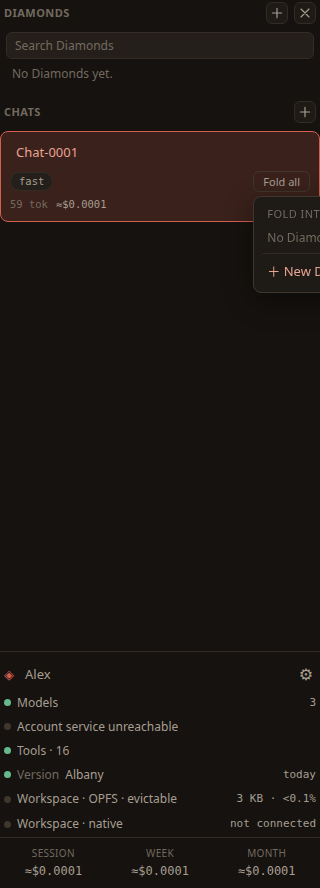

Chats & Diamonds
Um chat é uma conversa com o daimon. Um Diamond é um recipiente durável para um trabalho continuado — onde fica guardado o que você já esclareceu sobre esse trabalho, para que o trabalho seguinte comece dali. Esta página cobre como começar e ler chats, os controles de turno, dobrar um chat em um Diamond, o espaço de trabalho em que um Diamond trabalha e organizar os Diamonds que se acumulam.
Começar um chat e voltar a ele
Escolha Novo chat — o ＋ ao lado de Chats no alto da barra lateral. Digite na caixa embaixo do painel central e envie com ➤. Todo chat que você começa fica listado sob Chats na barra lateral; clique em um deles para trazê-lo de volta ao centro. Um chat novo começa no seu modelo padrão; você pode mudar o modelo só daquele chat pelo seletor no cabeçalho dele.
Enquanto uma resposta chega, você pode continuar digitando. Uma mensagem enviada nesse momento fica na fila em vez de se perder: ela aparece sob a conversa como um balão tracejado, e parte como um turno próprio assim que a resposta termina. Clique em um balão da fila para trazê-lo de volta à caixa e mudá-lo, ou no × dele para descartá-lo. Apertar ■ para parar a resposta devolve a você, sem enviar, tudo o que estava esperando atrás dela — parar quer dizer parar.
Ler uma conversa longa
Uma conversa cresce depressa, por isso o cabeçalho do chat traz controles para mantê-la legível. Eles ficam no canto superior direito do painel central.
Etapas
O botão Etapas mostra ou oculta as etapas das ferramentas na conversa — o trabalho que o agente fez entre a sua mensagem e a resposta dele. Oculte-as para ler só a conversa; mostre-as para ver o que ele de fato fez.
Recolher
O botão − recolhe todas as respostas, deixando o que você perguntou. É a forma mais rápida de correr os olhos por uma conversa longa, e é também assim que se começa a escolher turnos para dobrar.
Voltar
O botão ↑ volta para a sua última mensagem. Aperte de novo para percorrer as anteriores.
Ir para o fim
O botão ↓ leva de volta ao pé do chat e recomeça o percurso — de modo que o próximo ↑ vai para a sua última mensagem em vez de continuar de onde você tinha chegado.

Dobrar um chat em um Diamond
Quando uma conversa esclareceu alguma coisa, você a dobra: guarda o que aprendeu e larga o vaivém que produziu isso. Aquilo em que você dobra é um Diamond.
Duas unidades compõem um Diamond:
- Uma dobra é uma melhoria — um único passo adiante.
- Um cristal é o que as dobras acumularam: a forma do trabalho, os passos em sua ordem e as verificações que você descobriu do jeito difícil. Um Diamond é um cristal junto com a cadeia de dobras que o produziu.
Selecionar turnos e dobrá-los
Recolha a conversa com −, e então escolha os turnos que valem ser guardados. Uma fileira de controles aparece no cabeçalho para isso:
- Selecionar tudo — marca todos os turnos.
- Desmarcar tudo — limpa a seleção.
- Dobrar o selecionado — dobra os turnos escolhidos no Diamond.
Você dobra um passo que adotou, não um comentário de passagem: dobrar guarda o que você aprendeu, não a transcrição.

Trabalhar um Diamond
Os Diamonds ficam listados acima dos seus chats na barra lateral; adicione um com o ＋ ao lado de Diamonds. Selecionar um Diamond substitui o chat no centro pela superfície de comando dele — uma visão compacta onde você guia o trabalho e dobra nele outras melhorias. Dá para saber que face o painel está mostrando sem ler nada: num Diamond, o painel adota a marca do Daimond ao lado do nome e deixa os cantos retos, em contraste com os cantos arredondados de todo o resto da tela. A conversa volta no instante em que você escolhe um chat de novo, porque o Daimond é construído em torno da conversa e retorna a ela sempre que o palco ficaria vazio.
O que um Diamond faz, e o que não faz
Um Diamond retém; ele não executa. Nada executa um cristal. Não há motor de fluxo por trás de um Diamond, nada o agenda, nada encadeia um Diamond a outro, e não há tarefa salva esperando disparar. Voltar a um Diamond não o põe em marcha — nem deixá-lo em paz, já que um Diamond em repouso fica exatamente como você o deixou.
Então retomá-lo significa que você o guia de novo, com tudo o que ele já aprendeu em mãos. É essa toda a promessa, e ela vale mais do que parece. O cristal é prosa, e prosa é o que um modelo lê melhor: ele é entregue ao daimon como contexto quando você trabalha o Diamond, e a todo trabalhador despachado a partir dele. O que você esclareceu uma vez alcança o trabalho de novo sem que você o redigite — nem se lembre de que deveria.
O cristal e o histórico dele
O cristal são dois arquivos de verdade — crystal.json, o que o Diamond sabe, e crystal.html, a página que o desenha — na pasta do próprio Diamond dentro do seu espaço de trabalho. Você pode abri-los, lê-los e editá-los você mesmo, como qualquer outro arquivo.
Toda escrita em um cristal congela uma versão, de modo que um cristal tem histórico e nada é sobrescrito. O histórico lista todas as versões, da mais nova para a mais antiga, cada uma com aquilo que a produziu:
- Ver — ler aquela versão.
- Restaurar — tornar aquela versão a atual de novo.
- Delta — ver a entrada bruta que uma dobra consumiu, o material que foi dado ao agente para reduzir.
Artefatos
Um Diamond também guarda o rastro do que o trabalho dele tocou: os arquivos escritos e as páginas abertas enquanto você trabalhava nele. Você não precisa registrar nada disso. O Daimond já anota cada ferramenta que um agente usa, então a lista é lida do que aconteceu — e é reunida no momento em que você aceita uma dobra.
Arquivos que foram apenas lidos ficam de fora de propósito. Um agente pode abrir quarenta arquivos procurando uma coisa, e listar os quarenta enterraria aquele que importava. O que se guarda é o que o trabalho produziu, e as páginas que você pediu para ver.
Quando um Diamond tem algum, uma linha acima da caixa de guiar diz quantos. Clicar nela abre a lista, onde cada entrada faz três coisas:
- O botão nome o abre: um arquivo no painel Doc, uma página no painel Web.
- O botão seta pequena coloca uma referência a ele na caixa de guiar, de modo que você pode dizer “refaça os números neste aqui” sem digitar o caminho.
- O botão cruz o remove, se afinal ele não pertence a este Diamond.
O espaço de trabalho de um Diamond
Um Diamond tem um espaço de trabalho: os arquivos e as pastas que você guarda com ele. Quem os põe ali é você — um daimon não pode acrescentar nada ao próprio espaço de trabalho, então trabalha com o que lhe foi dado e pergunta a você quando precisa de mais.
É uma vista dos seus arquivos, não uma caixa que os contém. Nothing is copied when you attach something: the file stays where it is and the Diamond points at it. Attach the same folder to two Diamonds and there is still one folder — an edit made through either is the file the other reads. Taking something out of a Diamond's workspace only detaches it; the file itself is untouched, and only a deliberate delete removes it. The word espaço de trabalho invites you to expect a copy, and there is none.
Um Diamond também tem um diretório próprio, sempre no seu espaço de trabalho e sempre gravável, para que o daimon dele tenha onde trabalhar antes de você ter anexado qualquer coisa — o cristal mora ali. Uma pasta pode ser anexada para ser consultada em vez de editada, o que permite que um daimon a leia e recusa toda escrita. E o painel Espaço mostra ou todos os seus arquivos ou apenas os que este Diamond guarda, conforme convier ao trabalho à sua frente.
O que um daimon pode abrir
Um daimon só pode abrir os arquivos do espaço de trabalho do seu Diamond. Nada fora dele é legível ou gravável — nem pelo daimon, nem por qualquer trabalhador que ele despache. Isto não é uma instrução em um prompt que um modelo pode ou não honrar: a verificação está no código compilado, na única porta por onde passa toda ferramenta de arquivo, e esse código está no pacote publicado, que é construído de forma reproduzível. Portanto é uma afirmação que você pode conferir, e não uma que você tem de aceitar na confiança.
O que isso não cobre precisa ser dito no mesmo fôlego. Isso decide até onde um daimon pode chegar, não onde vai parar o que ele lê: tudo o que ele abre é enviado ao seu provedor de modelos junto com o resto do turno. E protege contra um agente que se enganou, ou que foi convencido de alguma coisa — um turno que acabou de ler uma página web ou um e-mail com instruções de um estranho, e saiu procurando em nome dele, ainda assim não alcança nada fora do espaço de trabalho deste Diamond. Não é uma proteção contra um provedor que use mal o que você lhe envia, nem contra uma versão que não seja a que publicamos; quem responde a essas duas coisas é o que sai do navegador e o registro selado de cada build, não isto.
Despachar trabalhadores
Algumas tarefas querem trabalho feito, e não apenas registrado. Para essas, o daimon do Diamond despacha um agente trabalhador. Cada trabalhador roda no próprio contexto, com as ferramentas de arquivo do espaço de trabalho, e recebe as instruções permanentes e o cristal deste Diamond. Esse cristal é tudo o que ele sabe sobre o seu trabalho — um trabalhador não enxerga a sua conversa, então a tarefa que lhe é entregue precisa dizer todo o resto de que ele precisa.
Até oito trabalhadores rodam de uma vez; os demais entram na fila. O daimon os despacha e o turno dele termina aí: ele não recebe o que produzem. Cada um relata um resumo, e você dobra à mão os que valem ser guardados — é isso que faz com que a escolha do que entra em um cristal continue sendo sua. As execuções ao vivo aparecem no painel Agentes do dock.
Segurar e parar agentes
O cabeçalho do painel Agentes traz três controles que agem sobre todo agente de uma vez, e os mesmos três aparecem em cada bloco para que você aja sobre um só:
- Pausar ⏸ — suspende o que está rodando e segura a fila. Um agente em execução guarda o que já tinha produzido; um que esperava simplesmente não começa. Nada de novo é lançado até você retomar. Este é o freio para um leque que está gastando mais rápido do que você pretendia.
- Retomar ▶ — continua cada agente pausado de onde ele parou. Ele retoma o próprio trabalho em vez de recomeçar, então uma pausa não lhe custa nada além da espera.
- Parar ✕ — encerra os agentes de vez. Cada um guarda o que conseguiu fazer, como um bloco parado; Limpar os retira. Esta é a chave de desligamento imediato.
Cada bloco também mostra o custo enquanto roda — os tokens e dólares acumulando ao vivo, e não só quando o agente termina — para que você veja o que um agente está gastando enquanto decide se o segura. Sob o cabeçalho, uma linha diz quantos agentes estão rodando, pausados e na fila, de modo que o tamanho — e o custo — de um leque se lê num relance. Juntas, essas são as suas defesas contra um descontrole; as medidas que o Daimond toma por conta própria estão na página Gastos deste guia.
Vale conhecer dois limites. Um trabalhador não pode despachar outro trabalhador, então a delegação desce um nível e para. E um Diamond é guiado de cada vez, então não há um segundo Diamond trabalhando enquanto você está de costas.
Etiquetas
Os Diamonds se acumulam, então podem ser etiquetados. Uma etiqueta é um rótulo curto que você escolhe. O editor sugere quatro para começar — person, project, topic e org — mas o Daimond não lhe impõe taxonomia nenhuma, e você pode digitar o que servir ao seu trabalho.
O que você digita é arrumado: uma etiqueta vai para minúsculas, é aparada e não se repete, com até 8 etiquetas em um Diamond e até 24 caracteres em cada uma. As etiquetas ficam guardadas nos metadados do próprio Diamond, neste dispositivo, como todo o resto.
O editor mostra duas caixas: as etiquetas neste Diamond, e todas as suas etiquetas embaixo. O botão × em um chip da caixa de cima tira aquela etiqueta deste Diamond e a devolve ao conjunto de baixo, onde um clique a repõe. O botão × em um chip da caixa de baixo é um ato diferente: ele exclui a própria etiqueta, de todos os Diamonds arquivados sob ela. Esse pergunta primeiro, e diz quantos Diamonds vai mudar. As quatro sugestões iniciais não trazem ×, porque são sempre oferecidas.
Acima da lista há uma caixa de busca, que procura no nome de um Diamond e nas suas etiquetas. Ela não busca dentro dos cristais. Clicar em um chip de etiqueta filtra a lista por aquela etiqueta, e a lista é ordenada pelo mais recentemente tocado, de modo que aquilo em que você trabalhou por último fica no topo.